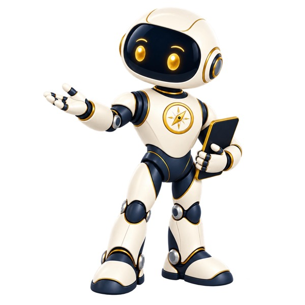
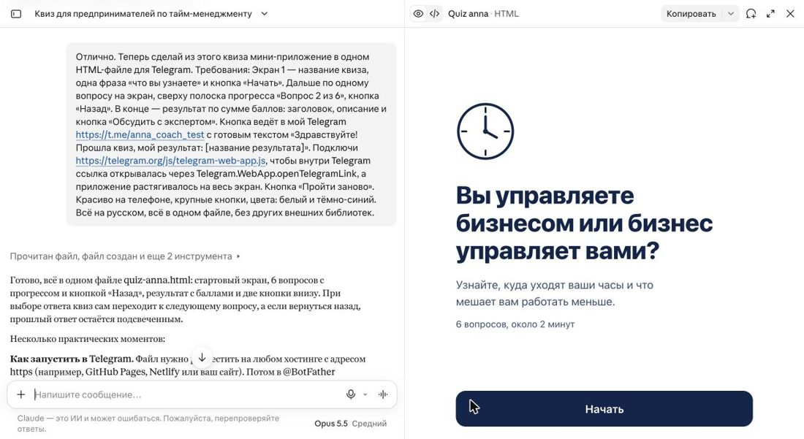

Прототип шага · голос Оракула — ElevenLabs
День 1 · Знакомство с Claude
✨ 25

ОРАКУЛ
Шаг 5 из 6
Первая страница

Здесь появится ваша страница
Слева — чат, справа — готовая страница (артефакт)
Сделай мне простую красивую веб-страницу-визитку в одном HTML-файле.
Я — [ваше имя], [чем помогаю].
На странице: моё имя, одна фраза о том, чем я помогаю, три пункта «С чем я работаю».
Стиль: спокойный, светлый фон, крупный шрифт, хорошо смотрится на телефоне.
Замените [в скобках] на своё